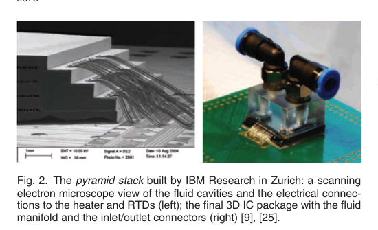
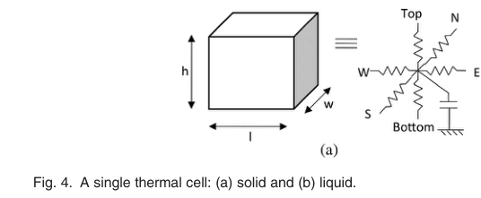
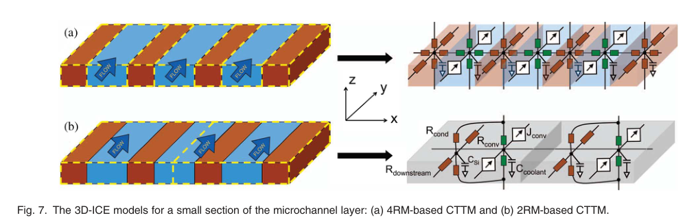
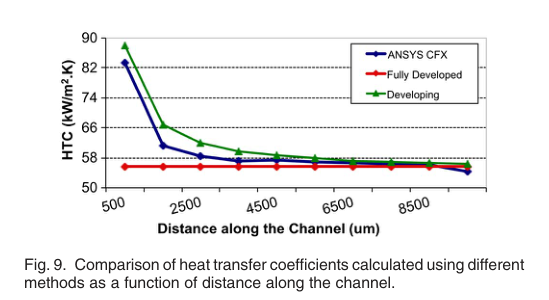
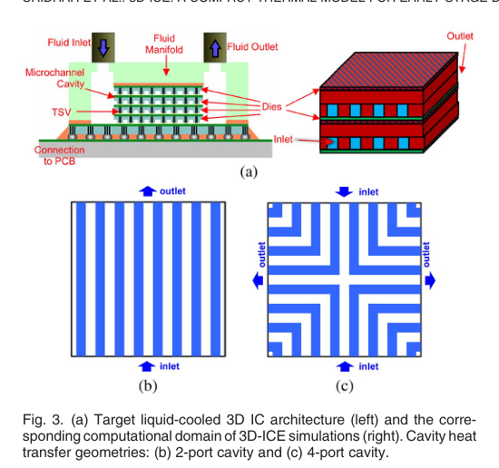
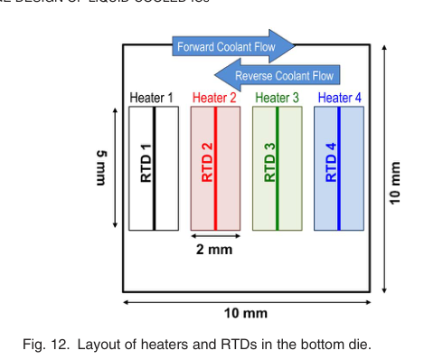
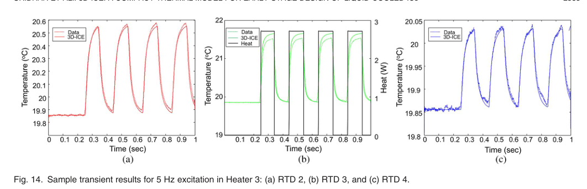
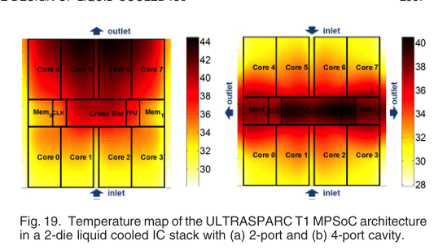
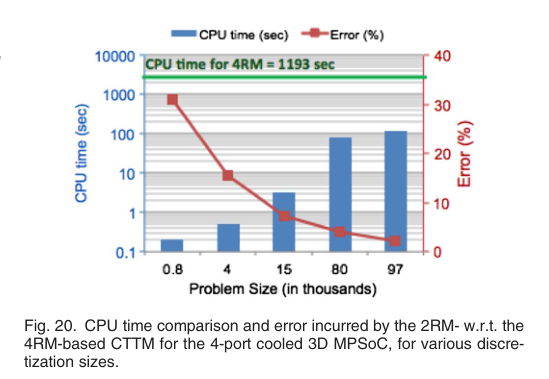

本报告由大模型自动生成，可能存在理解、归纳或数据转述错误；请以原论文为准。 3D-ICE: A Compact Thermal Model for Early-Stage Design of Liquid-Cooled ICsArvind Sridhar, Alessandro Vincenzi, David Atienza, Thomas Brunschwiler · IEEE Transactions on Computers · 2013 · 原文 · PDF 图表提取提示：报告提到的 Figure 18 未能自动裁出；请查看原论文 PDF。 报告模型：gemini-3.1-pro-preview / high 这是一篇对发表于2014年IEEE Transactions on Computers上的论文《3D-ICE: A Compact Thermal Model for Early-Stage Design of Liquid-Cooled ICs》的详细解析。本文按原论文的逻辑架构进行梳理，将详细介绍文章的问题背景、建模方法、实验验证以及在实际芯片设计中的应用。 一、 引言（Introduction）与背景补充问题背景与研究对象 随着半导体工艺的发展，三维多核片上系统（3D MPSoC, Three Dimensional Multiprocessor System-on-Chips）展现出了巨大的潜力。【背景补充】3D MPSoC是指将多个二维芯片（Die）在垂直方向上堆叠，并通过硅通孔（TSV, Through-Silicon Vias，穿透硅衬底的垂直电气连接）进行数据通信的架构。这种架构能极大缩短互连长度并提高集成度。 然而，这种垂直集成导致了严峻的“热墙”问题：芯片堆叠使得单位面积上的热通量（Heat Flux，单位为 ）急剧上升，传统的风冷散热器已经无法维持芯片的安全工作温度。为了解决这一物理限制，工业界提出在芯片层间直接蚀刻微通道（Microchannels），利用泵入液体的强制对流来带走热量（即液冷技术）。 本文解决的问题 要将液冷技术真正应用于计算机系统，架构师需要在设计的极早期（Early-stage）进行热感知平面规划（Thermal-aware floorplanning）和动态热管理（如动态电压频率调节 DVFS）。这就要求必须有一款既快又准的瞬态热仿真器。然而，现有的微流控仿真软件（如ANSYS CFX）主要基于计算流体力学（CFD），计算极其耗时，无法与架构设计工具结合。 为此，作者提出了3D-ICE（3D Interlayer Cooling Emulator），这是一个专为液冷3D芯片设计的紧凑型瞬态热模型（CTTM, Compact Transient Thermal Model）。本文的核心贡献包括：将模型扩展至支持多端口微通道腔体（Multi-port cavities，即不止一个入口和一个出口的复杂流道）；推导了更为高效的2电阻模型（2RM）以替代受限于硬件几何尺寸的4电阻模型（4RM）；并首次使用真实的液冷3D芯片物理原型对这类仿真器进行了系统级的实验验证。 二、 相关工作（Summary of Related Work）在芯片液冷技术的发展史上，Tuckerman和Pease早在1981年就展示了微通道水冷技术。近年来，随着3D IC的兴起，IBM苏黎世研究中心等机构构建了真实的层间液冷3D芯片原型。本文在实验部分正是采用了IBM构建的“金字塔堆叠”（Pyramid stack，如图2所示）作为验证依据。这是一个由多层尺寸递减的硅片堆叠而成的物理原型，内部包含电阻加热器（模拟发热的逻辑电路）和电阻温度探测器（RTDs, Resistance Temperature Detectors，其电阻值随温度线性变化，用于测量局部温度）。  在热建模方法学方面，学术界广泛采用有限差分法（Finite-difference approximation），即将固体导热的偏微分方程转化为等效的RC（电阻-电容）电路网络。【背景补充】在这种机电类比中，电压代表温度，电流代表热流，电阻代表热阻，电容代表热容。 著名的开源工具HotSpot就是针对传统风冷芯片的此类紧凑模型。然而，在3D-ICE出现之前，针对液冷芯片的模型要么只能计算稳态（无法反映温度随时间变化的瞬态过程），要么需要高度依赖CFD软件的预仿真，导致问题规模庞大且缺乏通用性。3D-ICE的出现填补了快速、瞬态、低复杂度的液冷系统级建模空白。 三、 3D-ICE中的紧凑热建模（Compact Modeling in 3D-ICE）本节是文章的核心方法部分，详细推导了3D-ICE是如何将复杂的流体力学现象抽象为电路元件的。 常规固体的紧凑建模 固体热传导的控制方程可以表示为： 其中， 是控制体积内的温度， 是材料的热导率， 是体积内的产热率（在此代表芯片逻辑单元发出的热量）， 是材料的体积比热容。通过空间离散化（将三维空间切分为长为 、宽为 、高为 的网格（Thermal cell）），上述偏微分方程可以转化为常微分方程网络。在电路类比中，方程左侧第一项（温度随时间的变化）等效为电容，第二项（空间温度梯度带来的热传导）等效为连接相邻网格的六个方向上的电阻，右侧的产热则等效为电流源（如图4a所示）。  液冷的紧凑建模与受限的4电阻模型（4RM-CTTM） 当引入流动的液体时，能量守恒方程多了一项对流项： 新增的 代表流体以速度 流动时带走的热量。在3D-ICE中，作者巧妙地将这一强制对流传输现象抽象为等效RC电路中的“压控电流源”（Voltage-controlled current source）。对于一个液体网格，其沿流向（假设为 方向）带走的热量被建模为： 其中，常数 （ 为平均流速， 为横截面积）， 和 分别是网格前后两个面的温度。 为了模拟液体与硅通道壁之间的热交换，早期的3D-ICE引入了4电阻模型（4RM，如图7a所示）。该模型在液体网格的四个侧面连接了四个对流热阻。但这里存在一个严重的硬件几何约束：为了精确匹配固液交界面，热网格在垂直于水流方向（ 方向）的离散尺寸 必须严格等于微通道的物理宽度或通道壁的厚度。由于微通道通常只有几十微米宽，这迫使整个芯片被切分成海量的微小网格，导致仿真速度极慢，无法满足早期架构设计的需求。  突破约束的2电阻模型（2RM-CTTM） 为了打破物理几何尺寸对仿真网格的强制约束，作者做出了一个关键的软件建模设计选择：引入多孔介质理论（Porous medium approach），提出了2电阻模型（2RM，如图7b所示）。 在这个模型中，作者不再区分具体的硅壁和水流，而是将整个微通道层均匀化（Homogenizing）为一个具有特定“孔隙率”（Porosity, ，定义为流体占据该层体积的百分比）的单一材料层。此时，一个大的热网格内可以同时包含多个物理微通道。在该网格内，对流热阻和热容分别按 或 的比例进行缩放： 其中 是通过将侧壁的热传导投影到顶底面上计算出的等效表面对流换热系数（HTC）。这一设计彻底解放了网格尺寸，使得用户可以使用远大于微通道宽度的粗网格进行仿真，大幅降低了计算复杂度。 对流换热系数（HTC）的改进 流体从通道入口进入时，存在一个“显热层”未完全形成的区域（Developing flows）。作者发现，在此前的模型中假设整个通道为“充分发展流”（Fully developed flows）会带来误差。因此，本文引入了Shah和London提出的针对发展中流动的Nusselt数（，表征对流换热强度的无量纲数）经验公式： 其中 是沿通道长度方向的无量纲距离。将该公式算出的HTC与CFX软件的仿真结果对比（图9），误差从之前的33%大幅降至9%，且无需额外的计算成本。  多端口微通道腔体的建模（Multi-Port Cavities） 传统的液冷腔体一端进水一端出水（2-port）。为了降低泵水阻力并改善温度均匀性，架构上提出了4-port腔体（图3c，南北进水，东西出水，水流呈90度弯曲）。3D-ICE通过根据微通道内的物理走线方向，改变液体网格中压控电流源的方向来支持这种结构。同时利用Darcy-Weisbach方程单独计算各分支的流量。计算的核心代码采用向后欧拉法（Backward Euler）进行时间积分，保证了任何时间步长下的数值绝对稳定性。  四、 3D-ICE准确性的实验验证（Evaluation Using Measurements）为证明3D-ICE的有效性，本文第六节进行了长篇幅的物理验证，这也是同类仿真器中首次与真实液冷3D芯片数据进行对比。 实验设计与数据提取挑战 实验使用了IBM的2-port水冷金字塔堆叠原型（图12，底层具有加热器和RTD，水温固定为 ）。作者在这里处理了一个关键的物理干扰：由于冷却液温度始终低于室温（），环境热量会不断渗入芯片，导致即使不开启加热器，水温在流出时也会升高，使得测量基线发生偏移。为剥离这一干扰，作者采取了一种实验学推理：对所有测试进行两次，第二次将水流方向反转；由于无论水向哪流，从环境中吸收的热量总和大致不变，通过对比正反向数据就能识别并消除环境热量注入的影响。此外，为进一步抑制环境干扰，实验仅激活处于堆叠最底层（受环境影响最小）的加热器。  作者共进行了70组实验，在不同水流量下，向加热器施加1Hz、5Hz、10Hz的方波电压或阶跃电压，提取瞬态温度响应。仿真时，出于模型简化的考量，作者假设芯片裸露面绝热（Adiabatic），即热量只能通过冷却液带走。 误差分析 对比仿真结果与测量数据（图14，虚线为测量，实线为仿真）： 
五、 真实3D MPSoC仿真案例与结论（Case Study & Conclusion）为了展示3D-ICE在系统设计中的应用，作者在第七节模拟了一个两层堆叠的ULTRASPARC T1处理器（一层是Core，一层是Cache）。 4-port 与 2-port 的架构影响 通过对比在相同压力降（1 bar）下2-port和4-port微通道的温度分布（图19），可以得到两个重要推断： 
仿真速度对比（2RM vs 4RM） 在保证4-port架构计算精度的前提下，作者对比了前文提出的2RM和受物理限制的4RM的仿真速度（图20）。当2RM的网格尺寸选择在 时（该尺寸是微通道宽度的几倍，属于粗粒度），2RM仅产生了7%的误差，但仿真速度比必须细粒度划分的4RM快了 375倍。这证明了2RM多孔介质抽象在软件设计选择上的巨大成功。  六、 全文总结与主线脉络主线逻辑：本文从3D芯片散热受限的物理痛点出发，引出液冷技术；由于液冷设计需要工具支持，作者开发了3D-ICE。为了解决早期版本中4RM模型因硬件几何约束导致计算缓慢的问题，作者抽象出了基于多孔介质的2RM模型；为了反映复杂的布水架构，增加了多端口（4-port）支持；为了修正理论与现实的偏差，引入了发展流的换热经验公式，并用极其严谨的真实硬件排除了环境干扰，完成了误差边界标定；最后通过案例证明了该工具既快又能有效指导架构布图。 核心假设与过度推广的边界：
|